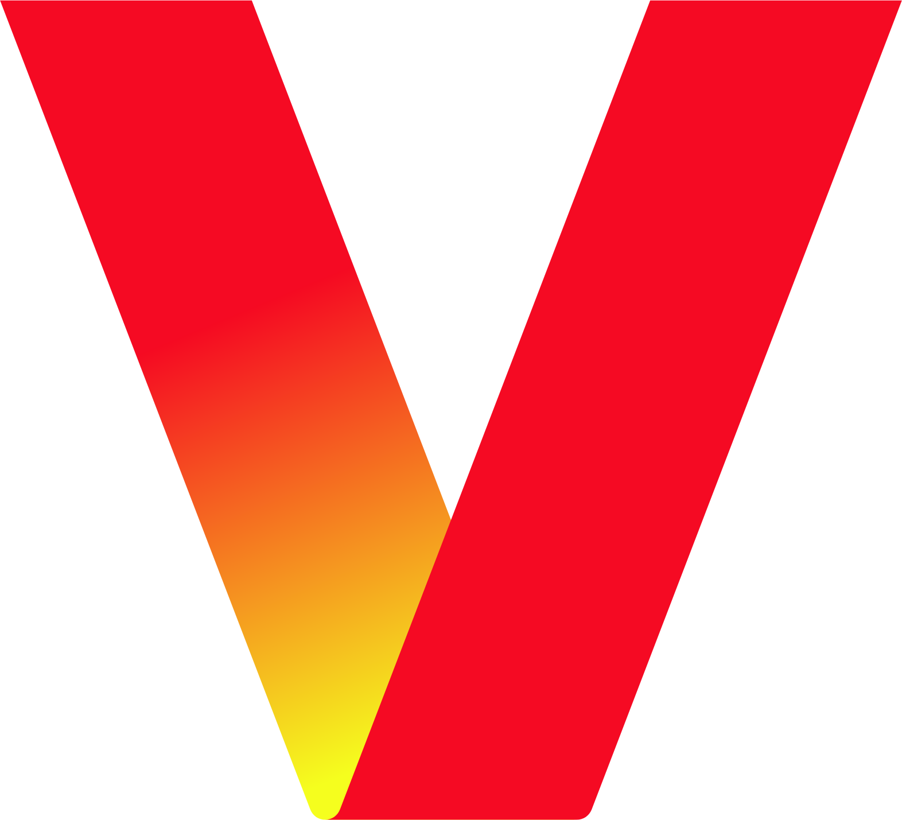

Verizon Business
Install Contractor
Surveyed commercial sites, deployed cellular extenders, and installed CAT5e, fiber, phone lines, and network hardware to keep enterprise clients online.
Aspiring Red Team Operator · UTSA
I'm a Red Team Operator who loves investigating systems and simulating attacks. I love CTF and HTB, and have a passion for Free and Open Source Software / Hardware.
Operator roles that sharpened troubleshooting instincts, escalation pathways, and offensive muscle memory.
Install Contractor
Surveyed commercial sites, deployed cellular extenders, and installed CAT5e, fiber, phone lines, and network hardware to keep enterprise clients online.
Technical Support Advisor
Troubleshot 30+ complex cases across macOS/iOS a day, coached customers on account hardening, and partnered with cross-functional teams to drive a 45% faster resolution time and 100% CSAT.
Cyber Operations Intern
Ran phishing simulations, built Splunk/SOAR automations, and tuned perimeter controls (Fortinet, Palo Alto, Cisco) to harden statewide infrastructure.
Field write-ups that walk through the tooling, lessons, and tradecraft behind each build.
How I stitched together Proxmox, Cisco routing, and isolated enclaves into a reliable red-team sandbox for malware triage and exploit drills.
Breaking down the SDR stack, CAD iterations, and signal-cleanup pipeline that made a budget-friendly weather downlink possible.

An ESP8266 wearable, Swift app, and on-device ML models team up to predict stress and trigger adaptive playlists.
Live feed of repos that capture the latest ops tooling, CTF automation, and experiment sprints.
Field notes from team-based competitions that sharpen exploit chains, reporting, and presentation chops.
Infrastructure Defender
Reinforced enterprise services under live fire, kept SOC telemetry actionable, and orchestrated rapid incident response.
Client-Facing Operator
Delivered full-scope assessment with exec briefings, remediation guidance, and collaborative reporting.
Finalist
Cracked crypto, pivoted across network challenges, and captured flags while documenting repeatable playbooks for teammates.
2nd Place (Team Lead)
Co-led exploit chains against embedded controllers, produced rapid turn-around reports, and briefed judges on mitigations.
Tracking certifications, lab grinds, and competitive boxes as the HTB journey levels up.
Grinding advanced adversary tradecraft and operator methodology to lock in the CPTS credential.
Completed multi-host red team lab focused on chained pivots, AD escalation, and opsec discipline.
Maintained a top-tier season rank by systematically clearing advanced boxes.
Crewmates who sharpen the blade—bridging student orgs and national competitions.
Adversary Simulation & Client PenTest
Attacking enterprise-scale enviroments and preparing Red Team Injects
Infrastructure Defense & Client Blue Team
Hardening enterprise-scale environments and coordinating playbooks against Red Team bombardment
Capture The Flag Team
Delivering end-to-end assessments with stakeholder briefings and collaborative reporting workflows.
Academic track + credentials that underpin the operator mindset.
Balancing offensive labs, defensive analytics, and IS coursework to bridge operators and stakeholders.
Need a red team operator with blue empathy and field experience? Drop a note and I'll reply within 24 hours.